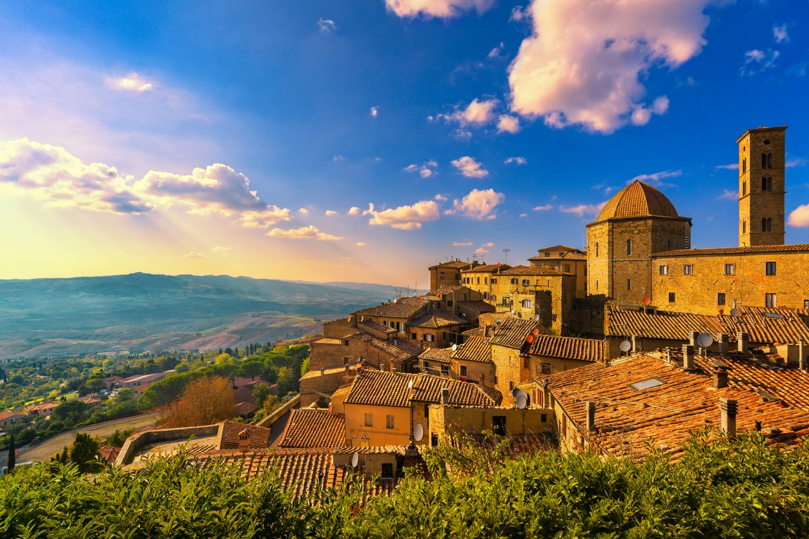
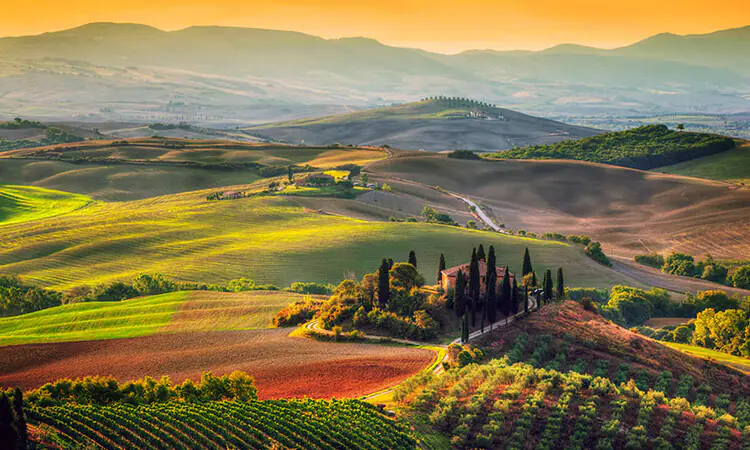

MONTEFIORALLE. En el valle de Chianti, famoso sobre todo por sus vinos, despunta este pequeño y encantador pueblo medieval de calles empedradas y flores en los alféizares. Cada mes de septiembre se celebra aquí el festival Expo del Chianti Clasico, que permite degustar los caldos de la región y conocer mejor sus excelencias.

Al volante por la carretera más bella de la Toscana. La Strada Regionale 222, la bonita tira de asfalto conocida como la Chiantigiana, que discurre entre Florencia y Siena por los viñedos de los que nace el vino más famoso de Italia, es un destino en sí mismo. Sus apenas 80 kilómetros dan para emborrachar la vista con las colinas tapizadas de cereal, olivos y viñas, los caserones de piedra color miel y las hileras de cipreses que enmarcan la postal más icónica de la campiña toscana.